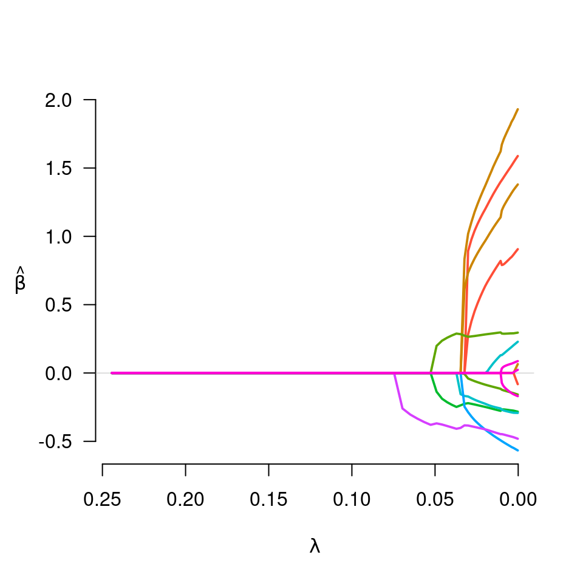
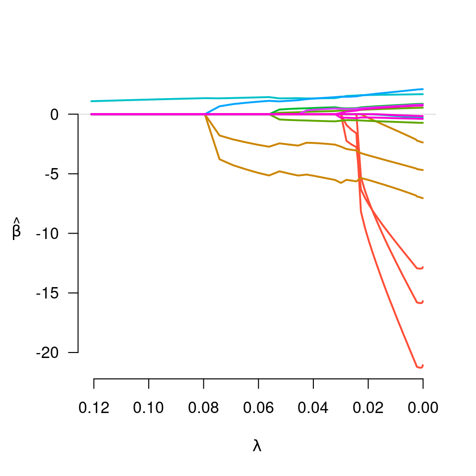

gBridge.RdFit regularization paths for linear and logistic group bridge-penalized regression models over a grid of values for the regularization parameter lambda.
gBridge(X, y, group=1:ncol(X), family=c("gaussian", "binomial", "poisson"), nlambda=100, lambda, lambda.min={if (nrow(X) > ncol(X)) .001 else .05}, lambda.max, alpha=1, eps=.001, delta=1e-7, max.iter=10000, gamma=0.5, group.multiplier, warn=TRUE, returnX=FALSE, ...)
| X | The design matrix, as in |
|---|---|
| y | The response vector (or matrix), as in |
| group | The grouping vector, as in |
| family | Either "gaussian" or "binomial", depending on the response. |
| nlambda | The number of |
| lambda | A user supplied sequence of |
| lambda.min | The smallest value for |
| lambda.max | The maximum value for |
| alpha | Tuning parameter for the balance between the group
penalty and the L2 penalty, as in |
| eps | Convergence threshhold, as in |
| delta | The group bridge penalty is not differentiable at zero,
and requires a small number |
| max.iter | Maximum number of iterations, as in
|
| gamma | Tuning parameter of the group bridge penalty (the exponent to which the L1 norm of the coefficients in the group are raised). Default is 0.5, the square root. |
| group.multiplier | The multiplicative factor by which each
group's penalty is to be multiplied, as in |
| warn | Should the function give a warning if it fails to
converge? As in |
| returnX | Return the standardized design matrix (and associated group structure information)? Default is FALSE. |
| ... | Not used. |
This method fits the group bridge method of Huang et al. (2009).
Unlike the penalties in grpreg, the group bridge is not
differentiable at zero; because of this, a number of changes must be
made to the algorithm, which is why it has its own function. Most
notably, the method is unable to start at lambda.max; it must
start at lambda.min and proceed in the opposite direction.
In other respects, the usage and behavior of the function is similar
to the rest of the grpreg package.
An object with S3 class "grpreg", as in
grpreg.
Huang J, Ma S, Xie H, and Zhang C. (2009) A group bridge approach for variable selection. Biometrika, 96: 339-355. doi: 10.1093/biomet/asp020
Breheny P and Huang J. (2009) Penalized methods for bi-level variable selection. Statistics and its interface, 2: 369-380. doi: 10.4310/sii.2009.v2.n3.a10
Patrick Breheny
data(Birthwt) X <- Birthwt$X group <- Birthwt$group ## Linear regression y <- Birthwt$bwt fit <- gBridge(X, y, group) plot(fit)#> (Intercept) age1 age2 age3 lwt1 lwt2 #> 2.99879014 0.00000000 0.89255360 0.28150939 1.01892522 0.00000000 #> lwt3 white black smoke ptl1 ptl2m #> 0.73433117 0.26506631 -0.04017367 -0.22057110 -0.17179296 0.00000000 #> ht ui ftv1 ftv2 ftv3m #> -0.28667606 -0.38431366 0.00000000 0.00000000 0.00000000#> (Intercept) age1 age2 age3 lwt1 lwt2 #> -1.0653116 0.0000000 0.0000000 0.0000000 -4.2881399 0.0000000 #> lwt3 white black smoke ptl1 ptl2m #> -2.1227947 0.0000000 0.0000000 0.0000000 1.3568294 0.0000000 #> ht ui ftv1 ftv2 ftv3m #> 0.8476535 0.0000000 0.0000000 0.0000000 0.0000000